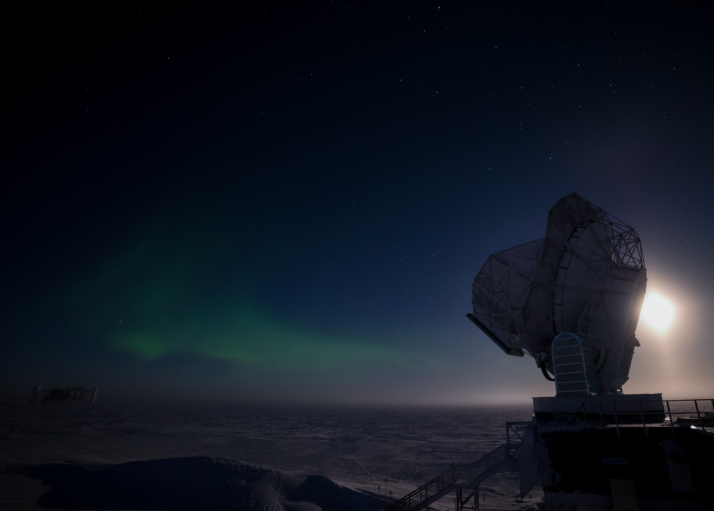
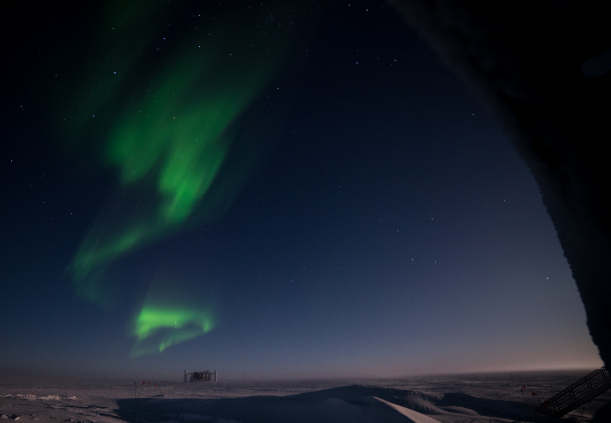
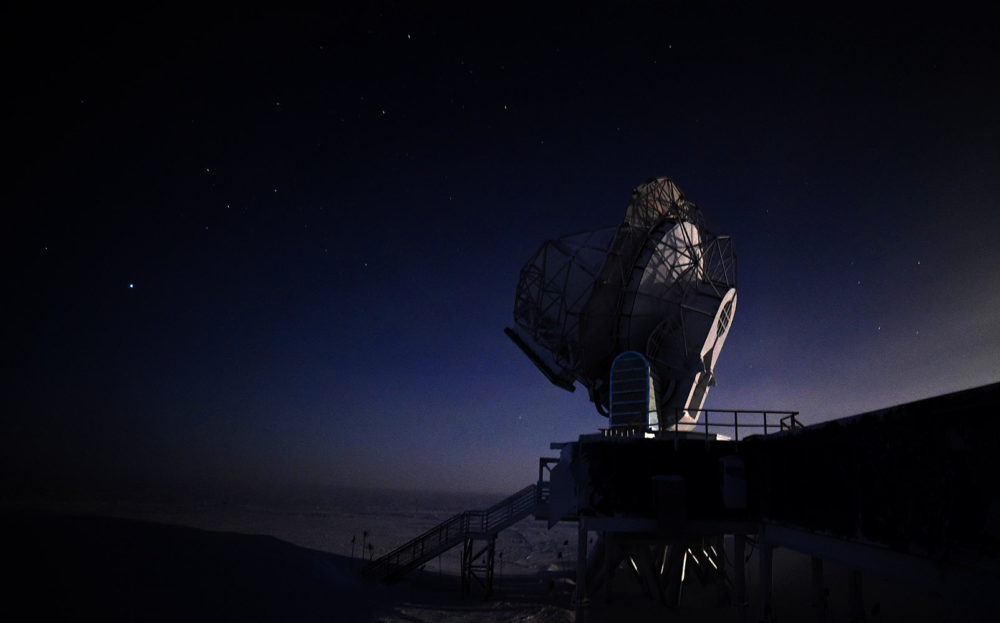
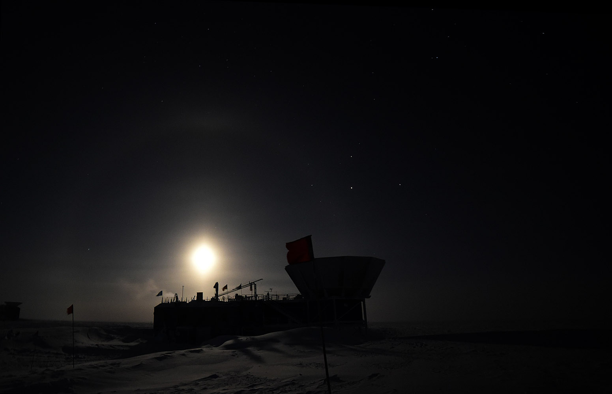

A blog about wintering over at the South Pole Station
Captain's Web Log(8) - 25 April 2016 - What do auroras look like?
They look like this:
Looking out from the DSL (Dark Sector Laboratory) stairs towards SPT. The big glow-y thing on the right is the moon (and in the second half of the video when it gets all shimmery, that's water vapor from the DSL boiler exhaust blowing past).
Both of these clips are timelapse video made from about 100 frames exposed for 2 seconds each, so the real time elapsed is around 200 seconds.
** These videos only work in some browsers because only some browsers play nice with mp4, and I am lazy. It definitely works on Chrome, so try that if you're having trouble.
I was about to head back to the main station after taking the above video, but as I was walking out the front door of DSL I saw some even better auroras above IceCube.
I didn't want to run back upstairs for the tripod in case they were gone by the time I got it set up, so you can attribute the super awkward framing here to the fact that I
just plopped my camera down on a little pile of snow on the DSL front deck and hoped for the best.



You got me... no aururas in this one. Nice stars, though.
Bonus full-halo moondog (like a sundog, but with 100% less sun and 100% more moon, not to be confused with Moondog, of whom
this is most certainly not a photo) behind the MAPO building:

Also, dear real, live blog-readers: Do you have questions or ideas for posts you'd like to see? Let me know! I have a several more topics on my list, but I could use some more ideas to keep the posts coming through the winter. If you don't already have contact info for me,
you can find my email address in the FAQ in the 'how can I contact you' section.
Current conditions
Temperature: -77F/-60C
Windchill: -106F/-77C
Wind: 6.3 kts Grid 91
Barometer: 690.1 mb (10,250 ft/3,124m)
Sun elevation below the horizon: 13 degrees (We are now in astronomical twilight)
And just for Lena: The moon is currently 16 degrees above the horizon and rising.
It rose on 19 April and it won't set until 3 May.